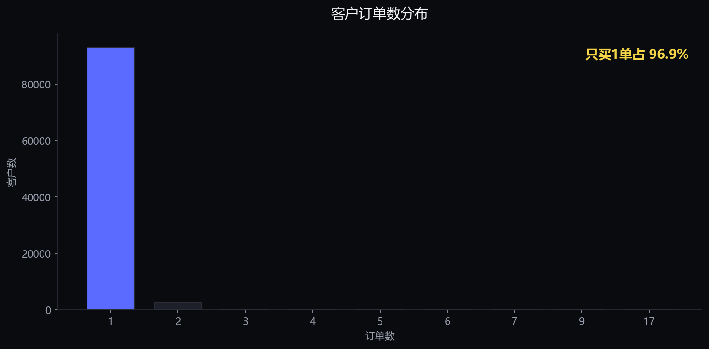
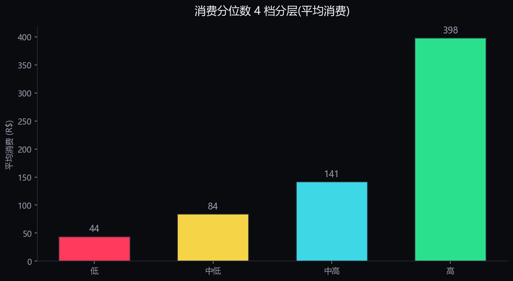
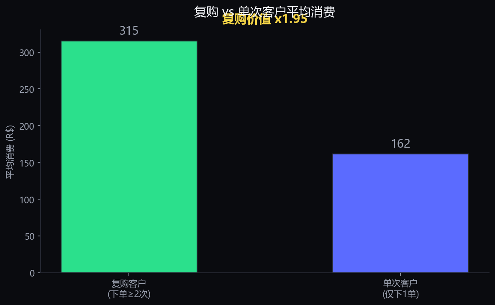

作品 02 · 通用向
建立"用户分层 → 生命周期 → 付费价值"通用方法论框架,可迁移到游戏等任何产品。
本作品是作品一(游戏向)的方法论基石。它的价值不是"分析电商",而是建立一套通用的用户分析框架,证明我可以把同样的方法迁移到任何产品——包括游戏。
作品二先建立框架,作品一在同一套框架上做游戏场景落地。"我有一套通用的用户分析框架,能迁移到任何产品" —— 这是数据运营的核心能力。
数据源:Olist 巴西电商公开数据集,约 9.9 万订单,含订单/客户/支付/评价/品类等 9 张表。
| 数据表 | 规模 | 用途 |
|---|---|---|
| orders(订单) | 9.9 万 | 下单时间、状态 |
| customers(客户) | 9.9 万 | 客户唯一标识、地区 |
| order_items(明细) | 11.3 万 | 订单金额、商品 |
| payments(支付) | 10.4 万 | 支付方式、金额 |
方法:多表关联 → 按客户聚合 → 生命周期划分 → 付费价值分层 → 方法论提炼。
这是作品二的核心产出——一套可复用的用户分析框架。
关联订单/客户/支付多表为宽表,处理缺失与异常,统一时间字段
按首购/末购/频次,划分 新客 / 复购 / 沉默 / 流失 四类
用 RFM(消费金额 / 频次 / 近度) 定义高价值用户
找出高价值用户的行为特征(复购、品类偏好、频次)
按分层给差异化策略:唤回沉默、促活新客、提升频次
这套框架不是只能用于电商 —— 它的每一步在游戏里都有对应,这正是"通用分析框架"的价值。
| 电商概念 | 游戏概念 | 运营动作 |
|---|---|---|
| 消费金额 | 付费金额(ARPPU) | 识别高付费玩家 |
| 复购 | 留存(再次登录/再次游玩) | 提升次日/7日留存 |
| 沉默/流失 | 玩家流失 | 流失预警与召回 |
| 高价值客户 | 高付费/高活跃玩家 | 重点运营与激励 |
| 品类偏好 | 角色/玩法偏好 | 个性化内容推荐 |
作品一(PUBG 分层)就是用这套框架做的游戏场景落地 —— 用户分层 → 行为分析 → 差异化运营方案。
聚合客户后,发现订单数呈典型长尾分布:绝大部分客户只购买一次。

平台缺乏复购粘性 —— 客户来一次就走。这决定了运营的核心命题不是"拉新",而是"让客户回来再买"。
按总消费分位数把客户分为 4 档,观察各档特征。

| 价值档 | 人数 | 平均消费 | 平均订单数 |
|---|---|---|---|
| 低 | 24,026 | 43.7 | 1.0 |
| 中低 | 24,037 | 83.8 | 1.0 |
| 中高 | 24,012 | 141.5 | 1.0 |
| 高 | 24,021 | 397.5 | 1.1 |
各档平均订单数几乎都是 1 —— 高价值客户不是靠"多买几次",而是靠"单次买很贵"。消费差距(高/低 ≈ 9 倍)全在单次金额上,不在购买次数上。

单次客户有 93,099 人,运营资源无法全部覆盖。用消费分位数(前 20%)筛选出最值得转化的高价值单次客户。
聚焦高价值单次客户,通过复购激励将其转化为复购客户。
这套"客户聚合 → 分层 → 复购差异 → 精准转化"框架,与作品一(PUBG 玩家分层)同源:
| 电商概念 | 游戏概念 | 运营动作 |
|---|---|---|
| 单次客户 | 低活跃/0击杀玩家 | 新手引导 / 首日留存 |
| 复购客户 | 高活跃/付费玩家 | 重点维护 / 付费激励 |
| 高价值单次 | 高潜力玩家 | 潜力识别 / 定向培养 |
"一套通用的用户分层框架,能迁移到任何产品" —— 作品一(游戏)和作品二(电商)用同一套方法论落地,证明可迁移性。